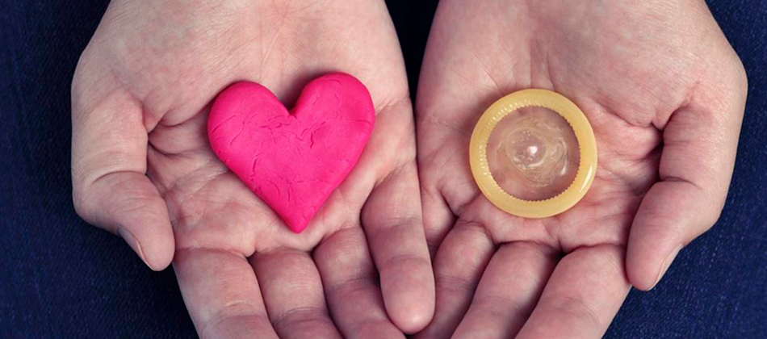

En relación a las últimas declaraciones aparecidas en diversos medios de comunicación sobre el preservativo, Médicos del Mundo recalca el valor de este instrumento en la lucha contra el VIH/sida y las infecciones de transmisión sexual (ITS) y su aportación para contribuir a hacer efectivos los derechos sexuales y reproductivos de todas las personas. Por todo ello quiere realizar las siguientes consideraciones:

- Es el único método anticonceptivo en el que participa el hombre en la planificación familiar - Disminuye la posibilidad de infecciones transmitidas sexualmente incluyendo el VIH - Son seguros - Puede ser usado por hombres de cualquier edad - Son fáciles de conseguir en muchos lugares (Unidades de Medicina Familiar, farmacias, supermercados, etc.) - Ayudan a prevenir la eyaculación prematura - No disminuye la sensibilidad, ni dificulta la eyaculación y el orgasmo - Algunos hombres pueden sostener una relación sexual durante más tiempo cuando usan condón masculino, esto resulta más gratificante tanto para él como para su pareja